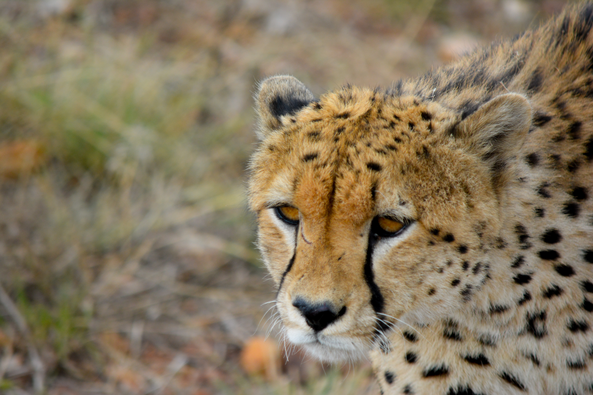

"치타"라는 이름은 "장식된"을 뜻하는 산스크리트어 시트라(चित्रय)에서 기원한 치타(cītā, 힌디어: चीता)에서 비롯되었다.[2][3] 몸 몸길이 수컷 150cm, 암컷 120cm, 꼬리길이 수컷50cm, 암컷 45cm, 몸무게는 수컷 70kg, 암컷 45kg이다. 몸은 회색이나 갈색이며 검은색의 작은 얼룩무늬가 조밀하게 있다. 치타는 다른 고양잇과 동물들과 달리 발톱을 완전히 숨길 수가 없다.[4] 생활 분포는 아프리카와 아시아인데, 원래는 아프리카에는 거의 전역에 살고, 아시아에는 아라비아, 중동, 중앙아시아, 인도에 살고 있었다. 하지만 인도에서는 1950년대에 마지막 10마리가 잡히면서 절멸을 하게 되고 이란에만 남아있다. 암컷은 단독생활을 하고 수컷은 무리지어 생활하거나 형제끼리 생활하는데, 보통 암수 한 쌍이나 암컷과 성장한 새끼로 이루어진 가족으로 또는 작은 무리를 이뤄서 생활한다. 주로 사자나 점박이하이에나 그리고 표범같은 육식동물이 별로 다니지 않는 아침과 낮에 사냥을 한다. 톰슨가젤, 임팔라, 작은 먹이를 먹는데, 특히 어린 영양이나 토끼을 잘 잡아먹는다. 먹이에게 조심스럽게 접근해서 번개처럼 덮쳐 잡는데, 이때 최고 속도로 약 30초를 정도를 달릴수도 있다. 가끔 사자나 표범, 하이에나에게 빼앗긴다. 그러나 가뭄과 같은 극한 전쟁시에는 하이에나에게 허세를 부리고 먹이를 방어하는 것이 목격되었다고 한다. 특징
치타는 지상에서 가장 빠른 동물로 알려져 있다.[5] 달리기 시작해서 2초 후에는 시속 72km로 속도를 낼 수 있으며 최고 속력은 무려 132km/h이다. 그러나 200~300m 거리에서만 이 속도를 유지할 수 있다. 오래 달리지 못하는 이유는 체온이 급속하게 올라가서 생명에 지장이 오기 때문이다. 치타가 빠른 이유는 등뼈가 앞뒤로 움직이는 것이 뛰어나기 때문이다. 한번에 7m까지 가는데 올림픽 선수가 3m가는 것에 비하면 엄청나게 긴 거리이다. 또 발의 접지력이 뛰어나고, 폐와 심장이 크며, 꼬리가 길어서 방향을 쉽게 전환한다고 알려져 있다.고양이와 다르게 치타는 발톱을 항상 드러내고 다니며 숨을 들이쉴 때는 고양이 특유의 갸르랑 거리는 소리를 잘 낸다. 생식[편집] 출산은 3~6월에 하며 임신기간은 90~95일이고 한배에 1~8마리의 새끼를 낳는다. 일반적으로 치타 새끼의 90%가 6개월 만에 죽게 되는데 새끼 중 절반 이상이 점박이하이에나, 줄무늬하이에나, 갈색하이에나, 표범, 사자에게 죽는다. 살아 남은 새끼는 약 15개월 동안 어미와 함께 생활하며, 먹이를 사냥하는 법을 배운다. 치타는 사바나나 반사막지대에 서식하였으나 오늘날에는 중앙아프리카와 동아프리카의 초원에 다수, 아시아 지대에 소수가 살고 있는데, 그 이유는 치타는 모피 질이 매우 좋아 사냥의 대상이 되었기 때문이다. 왕치타라는 약간 큰 아종이 존재한다. 서식지는 아프리카의 초원 사바나로, 주로 평평한 곳에 많이 산다. 표범 치타 표범과의 차이점 대체로 표범이 치타보다 큰 편이다. 치타는 성질이 온순하고 공격적이지 않으며 길들이기 쉽지만 표범은 성질이 호랑이보다도 사납고 호랑이보다도 공격적이며 기를 수 있는 동물이 아니다. 치타의 무늬는 점무늬이며, 꼬리 끝에는 줄무늬가 있고 꼬리는 끝이 하얀색인데, 표범의 무늬는 꽃무늬와 비슷한 고리 무늬이고 꼬리는 끝부분이 윗면이 까맣고 아랫면이 하얀색이다. 치타의 생활을 보면 암컷은 단독생활을 하고 수컷은 무리생활을 하거나 형제끼리 생활하는데 표범은 암수가 모두 단독생활을 한다. 두 동물을 쉽게 구별하려면 얼굴을 보면 된다. 치타의 얼굴에는 눈머리부터 입 부근까지 검은 줄무늬가 있다. 그리고 꼬리에는 다른 부분과 달리 검은 링 모양이 있다.
속도로 나타내면100~120km/h=75mph(120.701km/h)